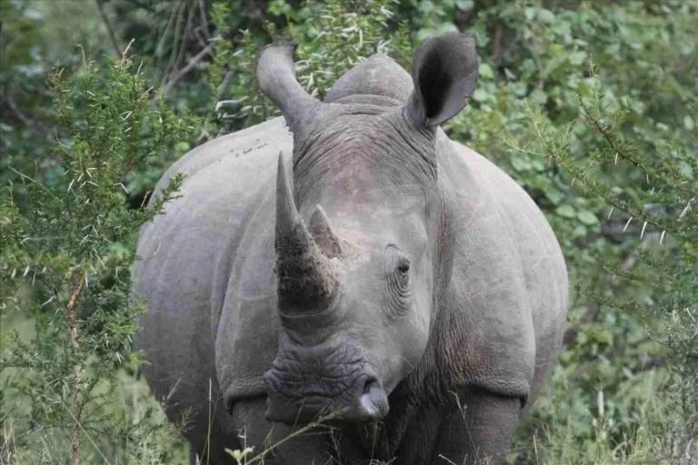
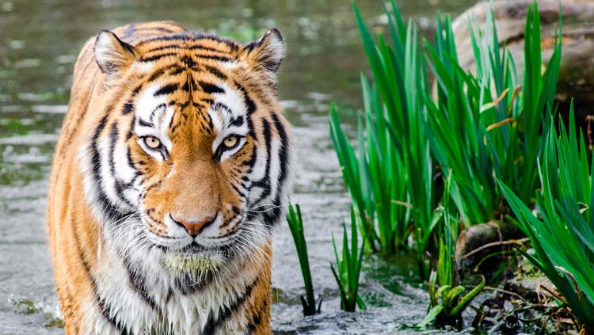
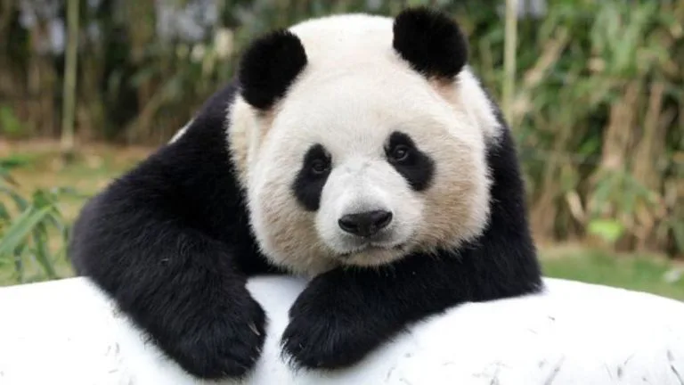
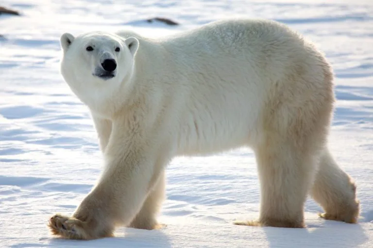

5 ESPECIES EN PELIGRO DE EXTINCÍON
Se calcula que hay unas 7,7 millones de especies de animales en el planeta. Un alto porcentaje de estas especies corresponde con animales en peligro de extinción, aunque no todos corren el mismo peligro. Te presentamos 5 de las especies más amenazadas.
1 RINOCERONTE DE JAVA
En la Lista roja de IUCN, la Unión Internacional para la Conservación de la Naturaleza, aparece catalogado como especie en peligro crítico porque solo quedan entre 46 y 66 ejemplares maduros. Sus codiciados cuernos y su aplicación medicinal son la principal amenaza que están provocando que se encuentre al borde de la extinción.

2- GORILA DE MONTAÑA
Están catalogados como una especie en peligro por la Lista roja de IUCN, que señala el Parque Nacional de Bwindi, Uganda, y la región de Virunga Volcanes de Ruanda, Uganda y República Democrática del Congo (RDC), como lugares en los que todavía se pueden encontrar ejemplares de esta especie de gorilas. Según WWF, sólo quedan 720 que vivan en su hábitat natural.

3-TIGRE
WWF es una de las organizaciones internacionales que más experiencia tienen en el ámbito de la protección de las especies en peligro de extinción. Estudios recientes han contabilizado sólo 3.200 tigres que vivan en su hábitat natural, el cual está amenazado también por el cambio climático.

4- PANDA GIGANTE
Se estima que hay menos de 2.500 pandas gigantes maduros viviendo en libertad y que cada población tiene menos de 250 individuos maduros, según la UIMP, que los clasifica en su Lista Roja como especie en peligro de extinción. La degradación de su hábitat es la principal amenaza a su supervivencia.

5- OSO POLAR
Su imagen para poner cara al cambio climático ha dado la vuelta al mundo. La polución por plásticos y la contaminación ambiental perjudican su sistema endocrino y de reproducción, volviéndose así una especie doblemente amenazada.
